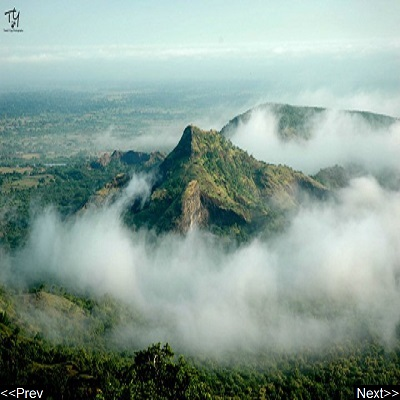

Pavagadh Hill
Pavagadh Hill is situated within a plain in Panchmahal district, Gujarat, western India. At its base is the historical city of Champaner, while the hill station of Pavagadh was built upon the volcanic cone itself.